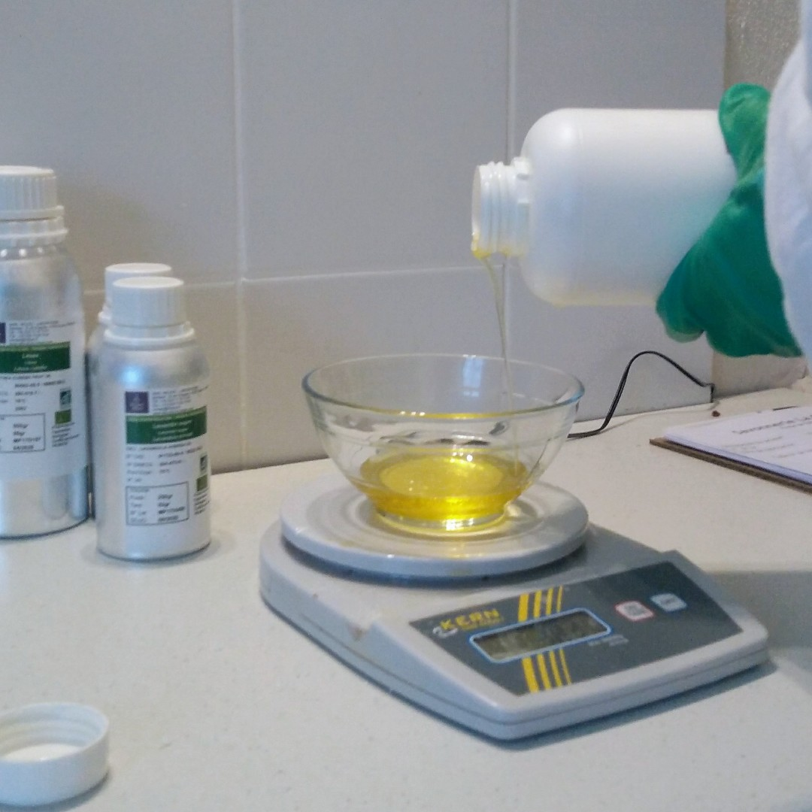
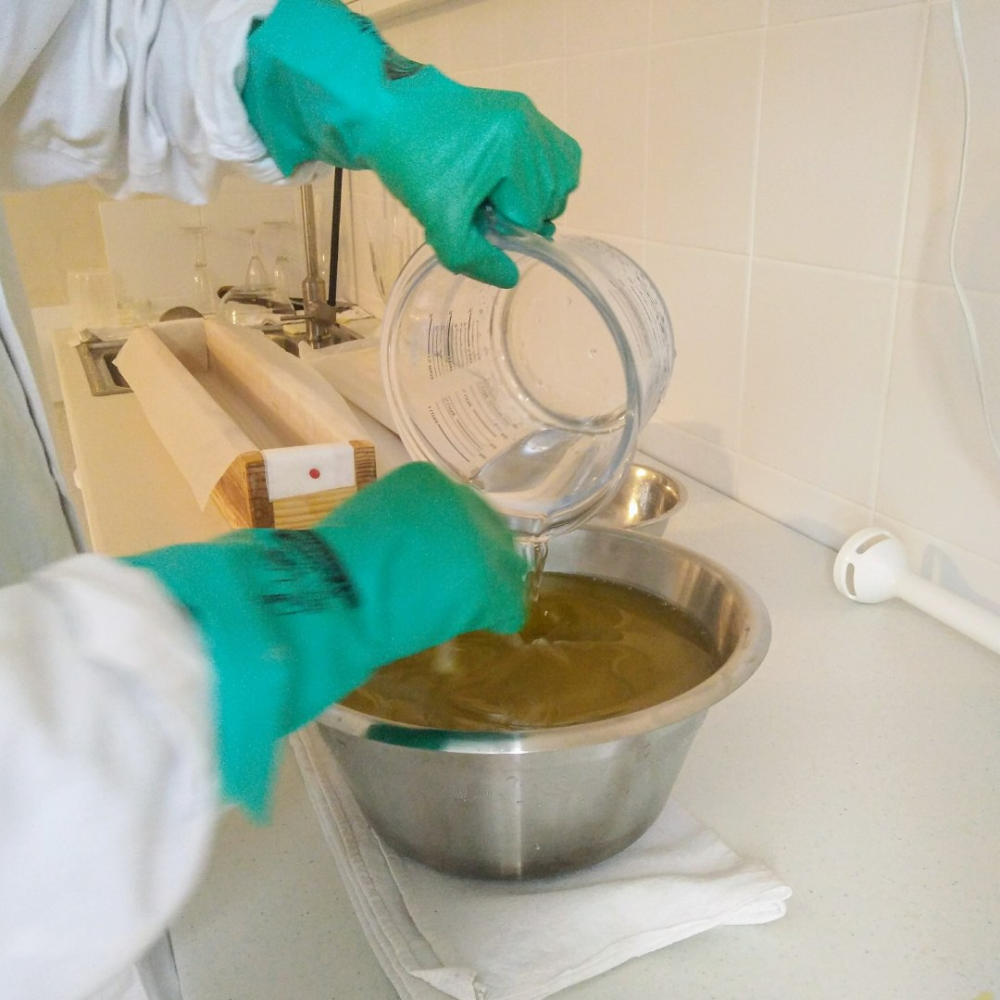
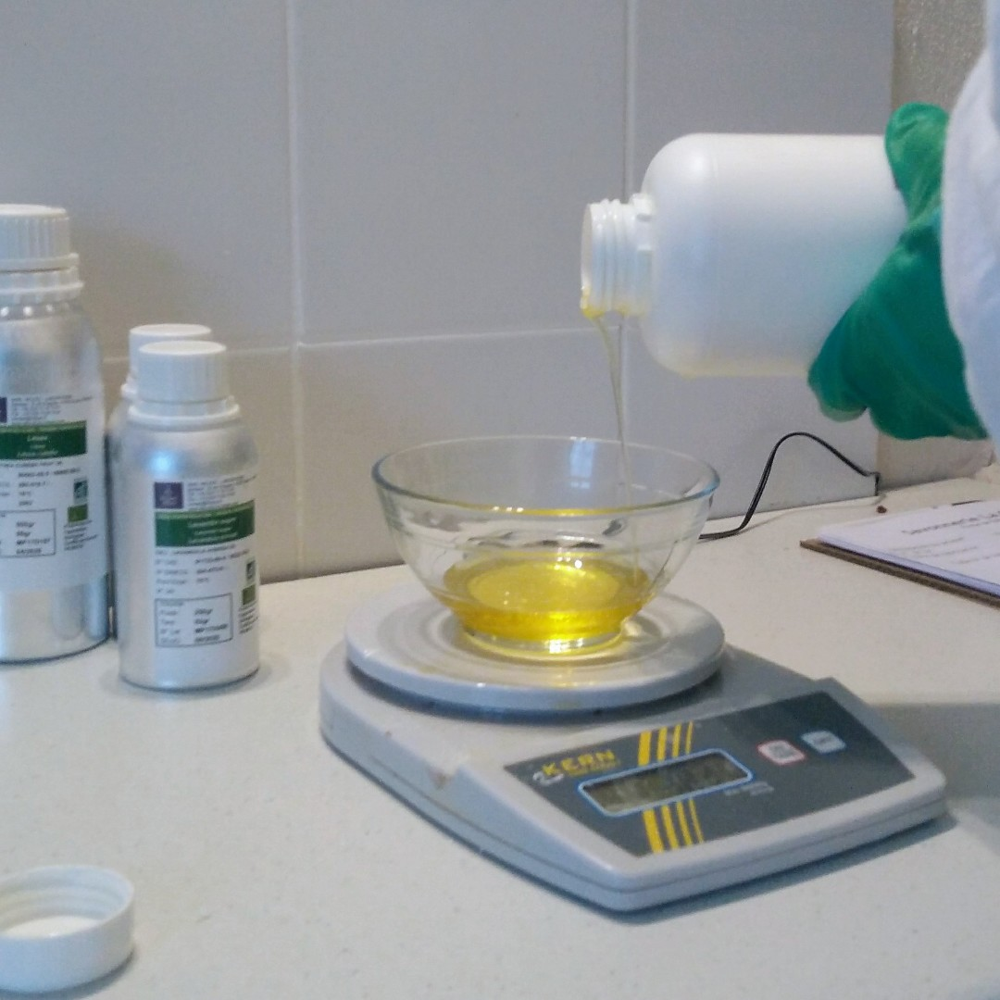
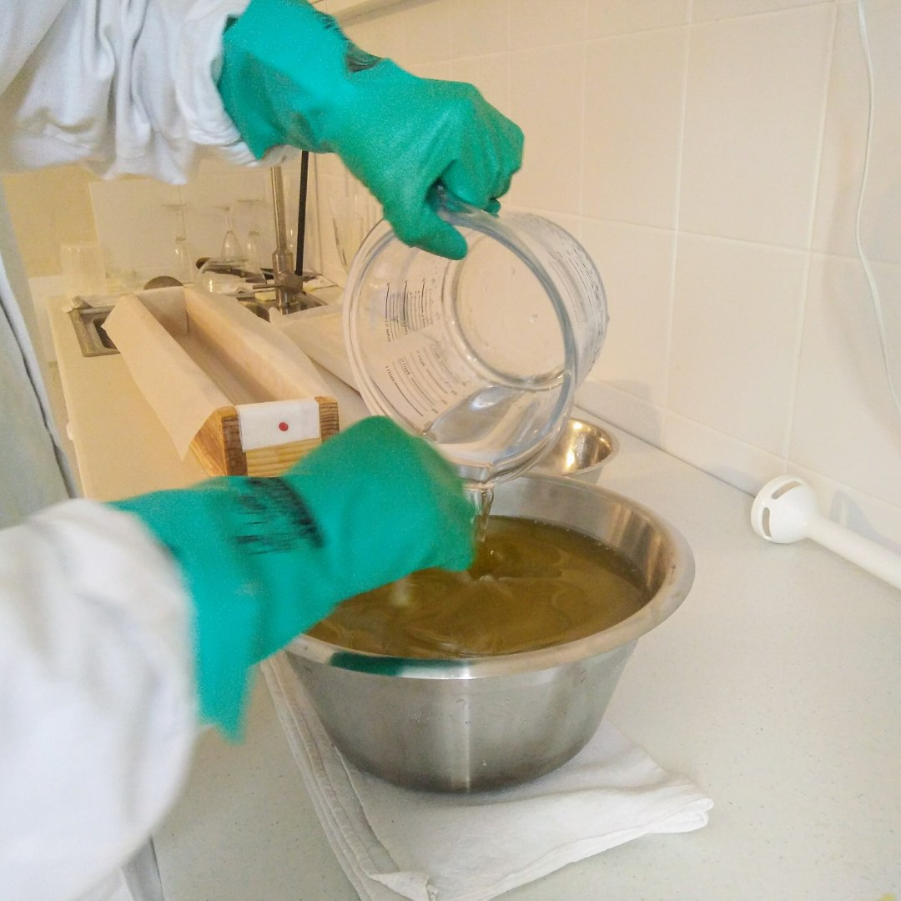
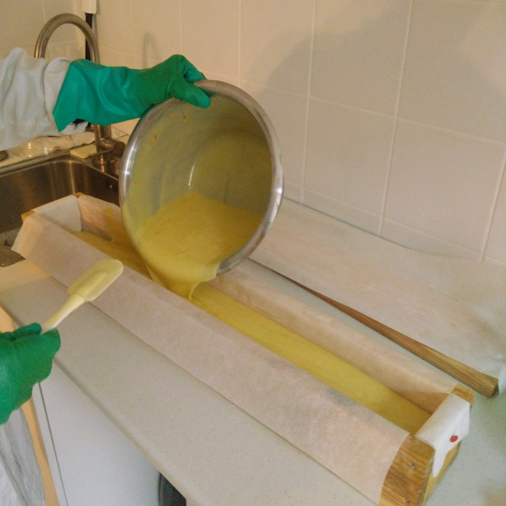
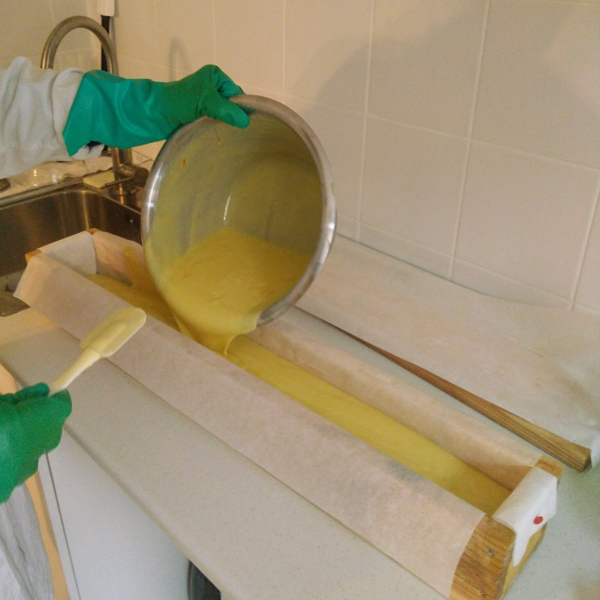
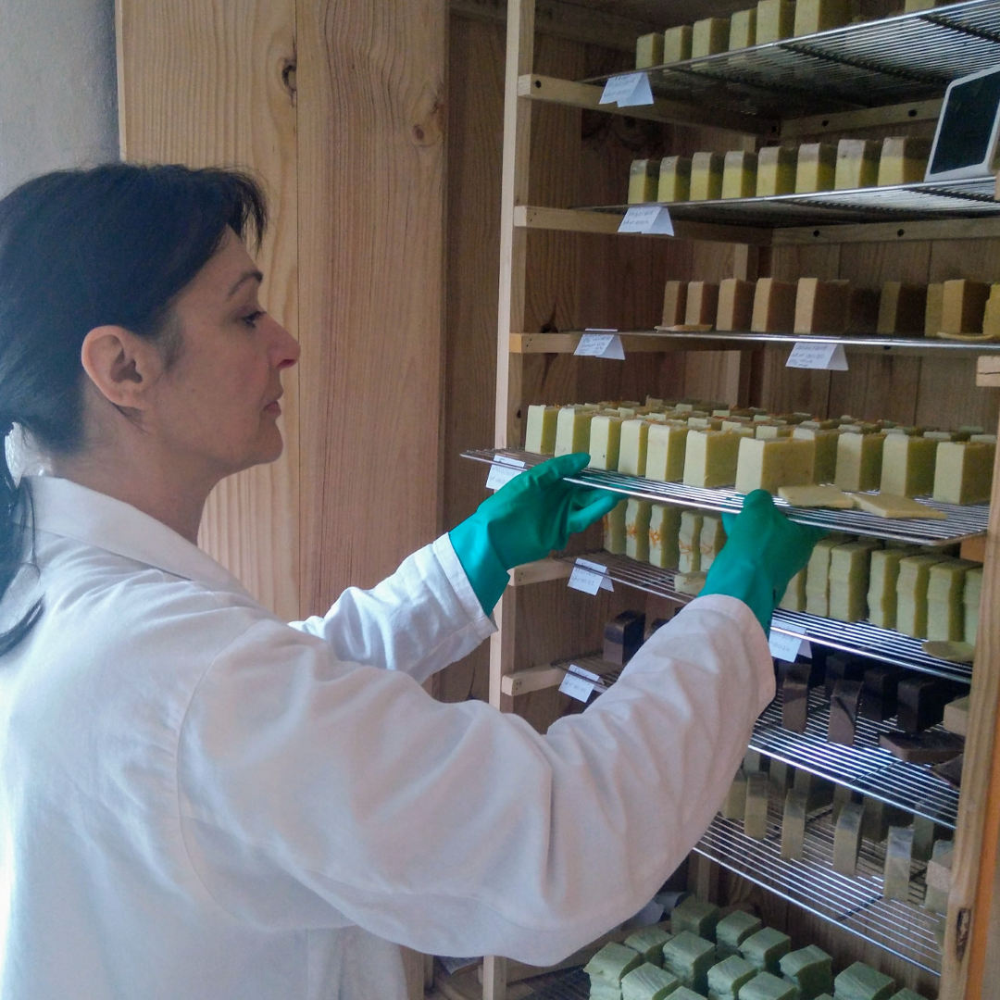
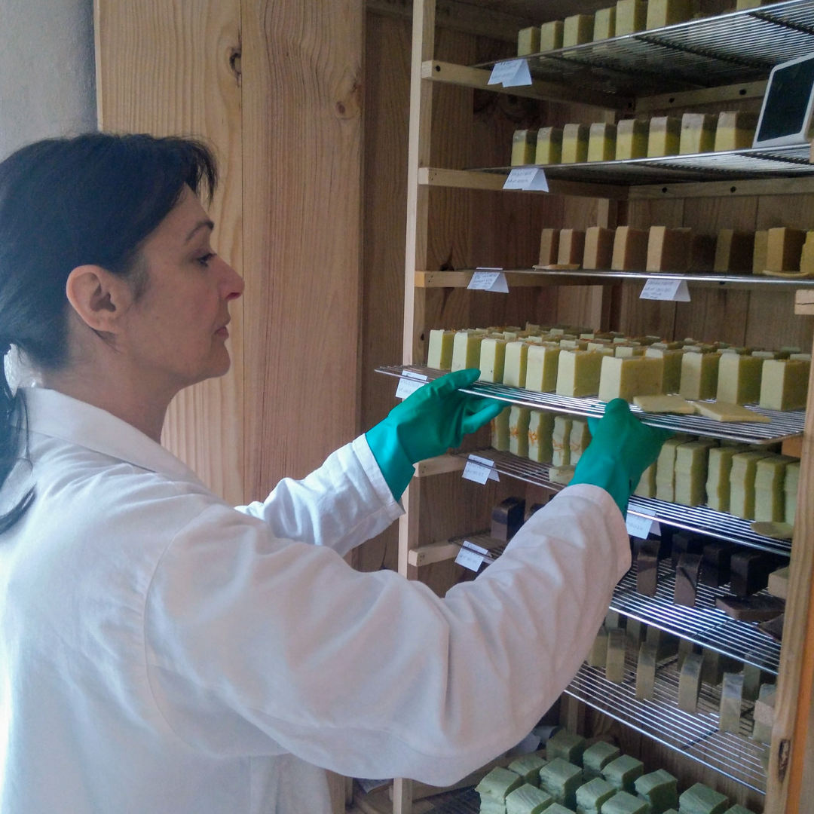

Müesli
Gourmand et nourrissant, cet exfoliant aux fruits secs au léger parfum d'orange est enrichi au beurre de karité hydratant.
Composition: huile d'olive, huile de coco, beurre de karité, huile de tournesol partiellement saponifiés, eau, glycérine, amandes, flocons d'avoine, baies de goji, huiles essentielles d'orange et de sauge sclarée
Müesli
Exfoliant

Délice
Hypoallergénique

Fanny
Tout en douceur

Thé citron
Le savon shampoing

Thé romarin
Et son parfum vif

César
Savon ménager
César lessive
César, en copeaux
Cette méthode de fabrication artisanale garantit la présence de glycérine dans le savon et permet de conserver une grande partie des propriétés bienfaisantes des huiles, beurres et huiles essentielles utilisés. C'est une méthode écologique dont le procédé de fabrication est sobre en énergie.
Création du savon Fanny
 





 

 

Les beurres de coco et de karité fondent doucement au bain-marie. Température: 35°C - 40°C.
En attendant, je pèse les huiles essentielles et le macérât de calendula qui sera ajouté en surgraissage.
J'incorpore la solution de soude préparée en amont avec les huiles et les beurres fondus. Le processus de saponification commence.
Méthode ancestrale d'accord, mais avec mixeur.
La pâte épaissit et forme une trace. C'est le moment d'ajouter les huiles essentielles et le macérât.
Après un dernier tour de mixeur j'ajoute quelques pétales de calendula pour faire joli !
La pâte est coulée dans le grand moule chemisé.
Quelques pétales de plus ! Le moule sera ensuite isolé thermiquement pendant 24 à 48h.
Le pain de savon est démoulé puis coupé en tranches.
Ils sècheront durant 4 à 6 semaines dans l'armoire de cure.
La saponification
La saponification est la réaction chimique qui transforme :
huile + soude => savon + glycérine
Il ne reste aucune trace de soude dans un savon "fini".
Le surgras
En cours de fabrication, j'enrichis mes savons d'huiles aux vertus apaisantes, régénérantes, et nourrissantes. Ces huiles, ajoutées aux corps gras déjà saponifiés viennent sur-graisser le savon.
Un savon surgras est un savon qui ne se contente pas de laver, il permet aussi au film hydrolipidique de la peau de se restaurer plus rapidement.
Henne Indigo et Compagnie
henneindigoetcompagnie.fr/boutique
Épicerie Proxy Vollore-Ville
Place de l'Église 63120 Vollore-Ville
Aux Champs
19 route de Clermont 63300 Thiers
Pharmacie de La Monnerie
43 Rue de la Gare 63650 La Monnerie-le-Montel
Le Bio Sens
le-bio-sens.fr
25 rue Fileterie 63600 Ambert
Savon ménager césar uniquement
L'auvergne en Vrac
facebook.com/lauvergne.envrac
Savon ménager césar uniquement
L'Orange Bleue
3 rue de la gravière 63160 Billom
Biliom
Place de la Halle, un lundi sur deux
Montferrand
place de la Fontaine, 1er samedi du mois
Olliergues
place de la mairie, les dimanches matin, du 1er juillet au 26 août
Au laboratoire
Sur rendez-vous 24h à l'avance
Valérie Cartailler
Rue du Château
63120 Vollore-Ville
06 43 69 39 67
Afficher sur la carte
Foire Aux Questions
Vos savons sont-ils bio ?
L'huile d'olive, de ricin, de jojoba, de coco, le beurre de karité, le beurre de cacao ainsi que toutes les huiles essentielles sont issus de l'agriculture biologique. L'huile de tournesol est produite sous mention Nature & Progrès à Moissat, à moins de 30km de la savonnerie par le GAEC Dou Chonlai.
Les savons sont emballés dans des sachets de cellophane végétale compostable.
J'ai les cheveux secs, le savon shampooing Thé Citron me convient-il ?
Le savon shampooing Thé Citron convient bien aux cheveux normaux et/ou mixtes. Si vos cheveux sont secs, préférez lui le savon Délice enrichi au beurre de cacao nourrissant. De plus, Délice est hypoallergénique et convient bien aux jeunes enfants.
Curieuse, d'accord, mais cette savonnerie est elle sérieuse ?
La savonnerie La Curieuse est enregistrée en temps qu'établissement cosmétique auprès de l'ANSM (Agence Nationale de Sécurité des Médicaments et des produits de santé) et chaque formule de savons est validée par un expert cosmétique.
Est-ce qu'il y a des ingrédients d'origine animale dans vos savons ?
Non. Les ingrédients utilisés dans la confection des savons La Curieuse sont d'origine végétale (huile d'olive, de coco, de tournesol, etc.) et minérale (argile ghassoul).
Vous avez du savon au lait d'ânesse ?
Non.